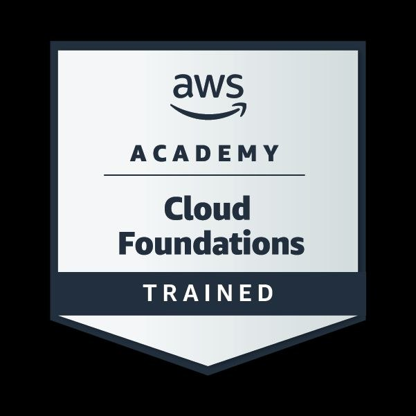

Houssem Eddine Magra
Software engineer & data-science researcher — production SaaS, telecom tooling, applied machine learning.
Software engineer (Licence in Génie Logiciel) and Master 2 Data Science & Intelligent Systems researcher at Université Constantine 2. I ship end-to-end: a multi-tenant conference SaaS (El Moultaqa) with an automated Android CI/CD pipeline, and web-automation tooling for 2G–5G radio planning at Ooredoo Algérie.
Everything below links to real repositories — filter by domain, open a case study, or jump straight to the code.
My research sits where applied machine learning meets deployed systems: Transformer fine-tuning for Arabic NLP (TRIA), interpretable clinical risk modeling with SHAP, and prognostics for wireless power transfer (ChargeOps AI).
Supervised at Université Constantine 2 by Prof. F. Benchikha Magra, Prof. D. Benmerzoug, Dr. N. Boudjlel, Dr. W. Ghammaz, Dr. F. Lezaar and Dr. B. Aklouche — with public methods, notebooks and reports.
Builds & production systems Research catalog & studies
Filter by domain or search the stack. Open any card for architecture notes, then jump straight to the repository. Grouped by domain, with supervision and methods noted — every repository and notebook below is public.
Experience & education
Web developer & problem solver — Radio Planning
Ooredoo Algérie
- Internal automation tools and responsive web interfaces for cellular data processing and site-parameter management, built directly with senior radio-planning engineers.
- Automated validation routines that accelerated daily operational KPI analysis — less manual calculation, faster cross-team handover.
Radio engineering intern — 2G → 5G mobile networks
Ooredoo Algérie
- End-to-end architecture analysis from 2G to 5G (n78): RAN (BSC, BTS, NodeB, eNodeB) and NSS core operations.
- Greenfield and rooftop site planning, sectorization, frequency-band allocation (GSM900/1800, U2100, LTE, 5G n78) and radio-parameter optimization (BCCH, BSIC, MIMO).
- Multiple-access schemes (FDMA, TDMA, CDMA, OFDMA) with FDD/TDD duplexing, plus IP/MPLS routing and microwave transmission.
Université Constantine 2
2021 — 2026Master 2 — Data Science & Intelligent Systems
Master 1 — Data Science (SDSI)
Licence — Software Engineering (Génie Logiciel)
Languages
El Moultaqa — الملتقى
An all-in-one, multi-tenant conference SaaS. Organizers launch a complete digital presence — branded web portals plus a signed Android app — within minutes. Four interconnected React 18/19 + Vite web applications and an automated GitHub Actions mobile build factory.
Conference-builder wizard
Guided setup plus a full admin panel for tracks, daily sessions, keynote speakers, sponsors and custom branding.
Automated GitHub Actions build
A CI/CD pipeline that compiles, signs and packages a native Android APK injected with the conference's logo and palette.
HLS streaming & live Q&A
Per-session HLS broadcasts with live audience Q&A, 5-star session ratings, push notifications and direct messaging.
Analytics & discovery
Attendee lists, session telemetry, CSV/JSON reporting exports and a public discovery page for new audiences.
Stack, certifications & teaching
Click any technology to filter the catalog above.
pip install samcode-cli

Amazon AWS Cloud Foundations
CloudI have completed the Amazon AWS Cloud Foundations certificate through AWS Academy — covering cloud concepts, AWS services, security, architecture, pricing and support.
Head of Development Team — M-Innovation
I lead the development team at M-Innovation — a platform built and maintained under my direction. The site, its architecture, design and deployment were created by me from the ground up, coordinating the full engineering pipeline end-to-end.
Click any certificate to open the actual document.
Ready when you are. Open to collaboration.
Hiring for software engineering, data science or telecom-adjacent roles? Or evaluating El Moultaqa for your event? Reach out directly — replies within a day. Interested in Arabic NLP, interpretable clinical ML, prognostics — or supervision for the next stage of my Master's? Write to either address; both reach me directly.